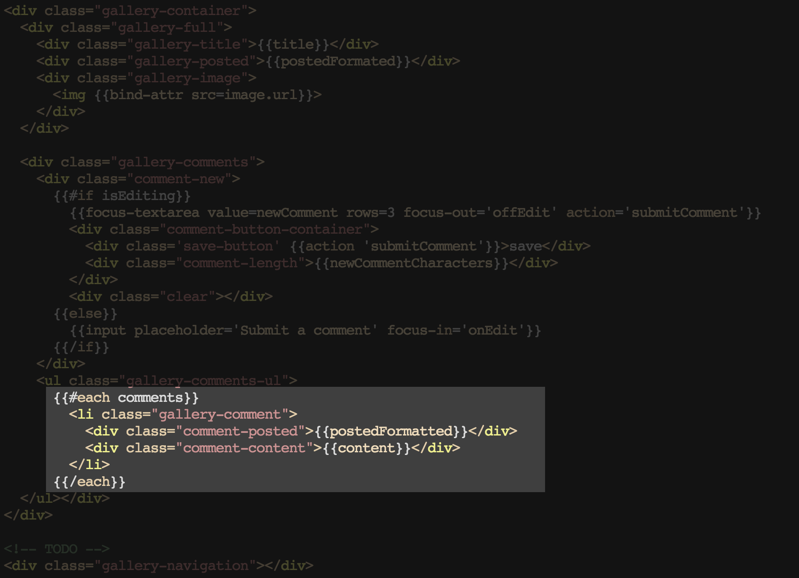

I have been programming for most of my life. I have interests all over the technology space, but my career has always focussed around the web and its ever changing technologies.
I have been working with Ember for over 2 years. My first application could easily be described as frustrating.
Organizer for sandiego.js I see a lot of members choosing ember and they are able to grasp the core concepts and fully recognize the benefits much easier
This is thanks to the individuals and companies that have adopted and contributed to the success of the framework.
Who is using Ember.js?
built with ember is another resource that highlights websites that are public facing and built with ember.
You'll see up here some fortune 500 and some other recognizable company names that are using Ember.
So Why do these companies chose Ember.js?
App grows, complexity doesn't
Sam Mueller, Yahoo Ad-Manager Plus
Ember has the ability to manage the complexity of large applications and websites with grace
Jackie Hade, from Digitaria on Qualcomm
The fact that Ember is so opinionated... any Ember developer can look at any other Ember application and immediately have a huge benefit
Lance Harper, NBCNews
When tasked with building a robust, powerful, and ambitious web applicaiton, Ember is the tool for that job.
It Grows!
One of those is that it grows really well. Ember boasts being developed for ambitious apps. It stays easy to manage and navigate a project as it grows in size.
Opinionated = Performance + Productivity
Another is that ember is opinionated.
Evolution: Rise from the Ashes
Where did we come from?
Ember didn't come out of nowhere boasting some serious muscle. There has been a long line of front-end web technologies that have led up to the modern day client-side solutions, like Ember. It has improved on the solutions built before it, and exceeded them.
Ajax
DOM Selection and Traversing
Events, Effects, and Animations
Extensible
I was working a web dev position when jQuery came up on my radar. The ease of making ajax calls was enough for me to incorperate it immediately.
Lean MVC
Small Footprint
Easy to Learn
Provides Basic Tools
The next big leap was Backbone and it improved the quality of life for many front-end developers.
Two-Way Binding
Manages View Life-Cycle
Automatic Creation
Router
Ember-Data
Performance
Two-Way binding in today's generation of client-side tech has really simplified templates and leaned down a lot of logic that had to be done prior to update views.
It's a Framework
Models*
Router
Controllers
Views & Components
Templates
Ember is very much a framework
Ember-CLI
I'm going to walk through an example application that will cover these core pieces. It is important to note that this will be done from the context of Ember-CLI.
After hitting enter you'll see ember-cli build out some required files and the enforced project structure with be stubbed out for you under the app/ directory.
Imgur Example
Using the commonly known web application, Imgur, as an example to demonstrate the core concepts of Ember.
URL
/
Template Path
app/templates/application.hbs
View Path
app/views/application.js
Controller Path
app/controllers/application.js
Route Path
app/routes/application.js
Lets take a look at the appication from a visual perspective first to get an idea of the different pieces that will be created.
URL
/
Template Path
app/templates/application.hbs
View Path
app/views/application.js
Controller Path
app/controllers/application.js
Route Path
app/routes/application.js
The default ember behavior for the view and controller is enough for our example, so we won't need to write any code for that. Ember will build out a working application view and controller with default behavior for us. We only need to write the application template, and that is only because we have a header that persists throughout the entire application.
Application Template
{{#link-to 'index'}}
{{outlet}}
Here is what our application template file looks like. Any time the route changes, the template will be rendered inside the outlet tag.
URL
/
Template Path
app/templates/index.hbs
View Path
app/views/index.js
Controller Path
app/controllers/index.js
Route Path
app/routes/index.js
By default, index is the route that is run when the url is at the root.
URL
/
Template Path
app/templates/index.hbs
View Path
app/views/index.js
Controller Path
app/controllers/index.js
Route Path
app/routes/index.js
For the index, we will need a custom template where we loop through each gallery item. Add some styling in there as well.
Index Route
import Ember from 'ember';
export default Ember.Route.extend({
model: function() {
return this.store.find('gallery');
}
});
this.store gives access to the data store.
{{#each}}
{{image-thumb content=this}}
{{/each}}
each default behavior is to loop over the content provided in the route.
components are a special kind of view that is completely isolated. any data you want it to have access to must be passed into it, this also works with bound elements.
:isHovering
commentCount
here is a demo of how the interaction is going to work. basically we want the gradient and comment count to show up when we hover, along with the border. The border we do with css, simple :hover selector.
Image Thumbnail Component
import Ember from 'ember';
export default Ember.Component.extend({
isHovering: false,
commentsCount: function() {
return this.get('content.comments.length');
}.property('content.comments'),
mouseEnter: function() {
this.set('isHovering', true);
},
mouseLeave: function() {
this.set('isHovering', false);
}
});
pretty simple component but it gives you an idea of a component. `content` is passed in and we get the comment count by grabbing the length of the comments array.
Image Thumbnail Template
{{#link-to 'gallery' content}}
<img {{bind-attr src=content.image.url}}>
{{#if isHovering}}
{{/if}}
{{/link-to}}
here we can see the isHovering flag at work in the handlebars template.
Adding Routes
I wrapped the entire image thumb component in a link-to so that when it was clicked, the individual gallery view would display that item's specific content.
Define Routes
import Ember from 'ember';
import config from './config/environment';
var Router = Ember.Router.extend({
location: config.locationType
});
Router.map(function() {
this.route('gallery', { path: '/gallery/:gallery_id' });
});
export default Router;
We don't need to define the main index or app route, ember will do that for us as we saw before.
This route content will replace the index content inside of that {{outlet}} tag.
The route default behavior as we mentioned will be enough for us, since we are taking advantage of the expected naming convention for our id parameter.
Gallery Item Template
{{title}}
{{postedFormated}}
<img {{bind-attr src=image.url}}>
This template has a bit more going on since there is more interaction available between the user and the application. I'm going to step through the unfamiliar pieces.
Gallery Item Template
bind-attr is a handlebars helper that allows for ember objects to be bound to a dom element attribute. in this example, the src for an image.
Gallery Item Template
focus-textarea is another component that extends the default ember textarea. this component has quite a few more attributes than the one prior and even has some actions being defined.
Gallery Item Template
action is another handlebars helper that triggers an event. these actions bubble up until the action is found.
Gallery Item Template

Gallery Item Controller
import Ember from 'ember';
export default Ember.ObjectController.extend({
maxChars: 140,
isEditing: false,
newComment: null, // bound to value of textarea
postedFormated: function() {
return moment(this.get('posted')).fromNow();
}.property('posted'),
newCommentCharacters: function() {
return this.maxChars - this.get('newComment.length');
}.property('newComment'),
actions: {
onEdit: function() {
this.set('isEditing', true);
},
offEdit: function() {
if (this.get('newCommentCharacters') === this.maxChars) {
this.set('isEditing', false);
}
},
submitComment: function() {
var _this = this;
var comment = this.store.createRecord('comment', {
content: this.get('newComment')
});
comment.save().then(function(comment) {
var gallery = _this.get('content');
gallery.get('comments').pushObject(comment);
gallery.save().then(function(gallery) {
_this.setProperties({
newComment: null,
isEditing: false
});
});
});
}
}
});
That's all you need to get started with